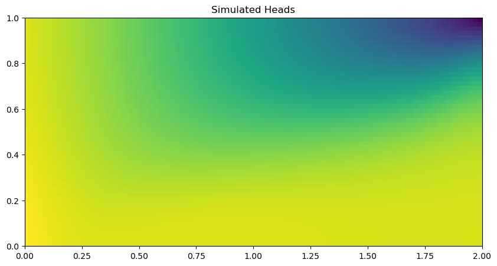

Note
This page was generated from Notebooks/flopy3_SEAWAT_henry_problem.ipynb.
Interactive online version: 
Henry Saltwater Intrusion Problem
In this notebook, we will use Flopy to create, run, and post process the Henry saltwater intrusion problem using SEAWAT Version 4.
[1]:
import os
import sys
from tempfile import TemporaryDirectory
import numpy as np
# run installed version of flopy or add local path
try:
import flopy
except:
fpth = os.path.abspath(os.path.join("..", ".."))
sys.path.append(fpth)
import flopy
print(sys.version)
print("numpy version: {}".format(np.__version__))
print("flopy version: {}".format(flopy.__version__))
3.10.10 | packaged by conda-forge | (main, Mar 24 2023, 20:08:06) [GCC 11.3.0]
numpy version: 1.24.3
flopy version: 3.3.7
[2]:
# temporary directory
temp_dir = TemporaryDirectory()
workspace = temp_dir.name
[3]:
# Input variables for the Henry Problem
Lx = 2.0
Lz = 1.0
nlay = 50
nrow = 1
ncol = 100
delr = Lx / ncol
delc = 1.0
delv = Lz / nlay
henry_top = 1.0
henry_botm = np.linspace(henry_top - delv, 0.0, nlay)
qinflow = 5.702 # m3/day
dmcoef = 0.57024 # m2/day Could also try 1.62925 as another case of the Henry problem
hk = 864.0 # m/day
[4]:
# Create the basic MODFLOW model structure
modelname = "henry"
swt = flopy.seawat.Seawat(modelname, exe_name="swtv4", model_ws=workspace)
print(swt.namefile)
# save cell fluxes to unit 53
ipakcb = 53
# Add DIS package to the MODFLOW model
dis = flopy.modflow.ModflowDis(
swt,
nlay,
nrow,
ncol,
nper=1,
delr=delr,
delc=delc,
laycbd=0,
top=henry_top,
botm=henry_botm,
perlen=1.5,
nstp=15,
)
# Variables for the BAS package
ibound = np.ones((nlay, nrow, ncol), dtype=np.int32)
ibound[:, :, -1] = -1
bas = flopy.modflow.ModflowBas(swt, ibound, 0)
# Add LPF package to the MODFLOW model
lpf = flopy.modflow.ModflowLpf(swt, hk=hk, vka=hk, ipakcb=ipakcb)
# Add PCG Package to the MODFLOW model
pcg = flopy.modflow.ModflowPcg(swt, hclose=1.0e-8)
# Add OC package to the MODFLOW model
oc = flopy.modflow.ModflowOc(
swt,
stress_period_data={(0, 0): ["save head", "save budget"]},
compact=True,
)
# Create WEL and SSM data
itype = flopy.mt3d.Mt3dSsm.itype_dict()
wel_data = {}
ssm_data = {}
wel_sp1 = []
ssm_sp1 = []
for k in range(nlay):
wel_sp1.append([k, 0, 0, qinflow / nlay])
ssm_sp1.append([k, 0, 0, 0.0, itype["WEL"]])
ssm_sp1.append([k, 0, ncol - 1, 35.0, itype["BAS6"]])
wel_data[0] = wel_sp1
ssm_data[0] = ssm_sp1
wel = flopy.modflow.ModflowWel(swt, stress_period_data=wel_data, ipakcb=ipakcb)
henry.nam
[5]:
# Create the basic MT3DMS model structure
# mt = flopy.mt3d.Mt3dms(modelname, 'nam_mt3dms', mf, model_ws=workspace)
btn = flopy.mt3d.Mt3dBtn(
swt,
nprs=-5,
prsity=0.35,
sconc=35.0,
ifmtcn=0,
chkmas=False,
nprobs=10,
nprmas=10,
dt0=0.001,
)
adv = flopy.mt3d.Mt3dAdv(swt, mixelm=0)
dsp = flopy.mt3d.Mt3dDsp(swt, al=0.0, trpt=1.0, trpv=1.0, dmcoef=dmcoef)
gcg = flopy.mt3d.Mt3dGcg(swt, iter1=500, mxiter=1, isolve=1, cclose=1e-7)
ssm = flopy.mt3d.Mt3dSsm(swt, stress_period_data=ssm_data)
# Create the SEAWAT model structure
# mswt = flopy.seawat.Seawat(modelname, 'nam_swt', mf, mt, model_ws=workspace, exe_name='swtv4')
vdf = flopy.seawat.SeawatVdf(
swt,
iwtable=0,
densemin=0,
densemax=0,
denseref=1000.0,
denseslp=0.7143,
firstdt=1e-3,
)
[6]:
# Write the input files
swt.write_input()
[7]:
# Try to delete the output files, to prevent accidental use of older files
try:
os.remove(os.path.join(workspace, "MT3D001.UCN"))
os.remove(os.path.join(workspace, modelname + ".hds"))
os.remove(os.path.join(workspace, modelname + ".cbc"))
except:
pass
[8]:
v = swt.run_model(silent=True, report=True)
for idx in range(-3, 0):
print(v[1][idx])
Elapsed run time: 11.526 Seconds
Normal termination of SEAWAT
[9]:
# Post-process the results
import numpy as np
import flopy.utils.binaryfile as bf
# Load data
ucnobj = bf.UcnFile(os.path.join(workspace, "MT3D001.UCN"), model=swt)
times = ucnobj.get_times()
concentration = ucnobj.get_data(totim=times[-1])
cbbobj = bf.CellBudgetFile(os.path.join(workspace, "henry.cbc"))
times = cbbobj.get_times()
qx = cbbobj.get_data(text="flow right face", totim=times[-1])[0]
qz = cbbobj.get_data(text="flow lower face", totim=times[-1])[0]
# Average flows to cell centers
qx_avg = np.empty(qx.shape, dtype=qx.dtype)
qx_avg[:, :, 1:] = 0.5 * (qx[:, :, 0 : ncol - 1] + qx[:, :, 1:ncol])
qx_avg[:, :, 0] = 0.5 * qx[:, :, 0]
qz_avg = np.empty(qz.shape, dtype=qz.dtype)
qz_avg[1:, :, :] = 0.5 * (qz[0 : nlay - 1, :, :] + qz[1:nlay, :, :])
qz_avg[0, :, :] = 0.5 * qz[0, :, :]
[10]:
# Make the plot
import matplotlib.pyplot as plt
fig = plt.figure(figsize=(10, 10))
ax = fig.add_subplot(1, 1, 1, aspect="equal")
ax.imshow(
concentration[:, 0, :], interpolation="nearest", extent=(0, Lx, 0, Lz)
)
y, x, z = dis.get_node_coordinates()
X, Z = np.meshgrid(x, z[:, 0, 0])
iskip = 3
ax.quiver(
X[::iskip, ::iskip],
Z[::iskip, ::iskip],
qx_avg[::iskip, 0, ::iskip],
-qz_avg[::iskip, 0, ::iskip],
color="w",
scale=5,
headwidth=3,
headlength=2,
headaxislength=2,
width=0.0025,
)
plt.savefig(os.path.join(workspace, "henry.png"))
plt.show();

[11]:
# Extract the heads
fname = os.path.join(workspace, "henry.hds")
headobj = bf.HeadFile(fname)
times = headobj.get_times()
head = headobj.get_data(totim=times[-1])
[12]:
# Make a simple head plot
fig = plt.figure(figsize=(10, 10))
ax = fig.add_subplot(1, 1, 1, aspect="equal")
im = ax.imshow(head[:, 0, :], interpolation="nearest", extent=(0, Lx, 0, Lz))
ax.set_title("Simulated Heads");

Change the format of several arrays and rerun the model
[13]:
swt.btn.prsity.how = "constant"
swt.btn.prsity[0].how = "internal"
swt.btn.prsity[1].how = "external"
swt.btn.sconc[0].how = "external"
swt.btn.prsity[0].fmtin = "(100E15.6)"
swt.lpf.hk[0].fmtin = "(BINARY)"
[14]:
swt.write_input()
v = swt.run_model(silent=True, report=True)
for idx in range(-3, 0):
print(v[1][idx])
Util2d:hk layer 1: resetting 'how' to external
Elapsed run time: 11.523 Seconds
Normal termination of SEAWAT
[15]:
try:
# ignore PermissionError on Windows
temp_dir.cleanup()
except:
pass